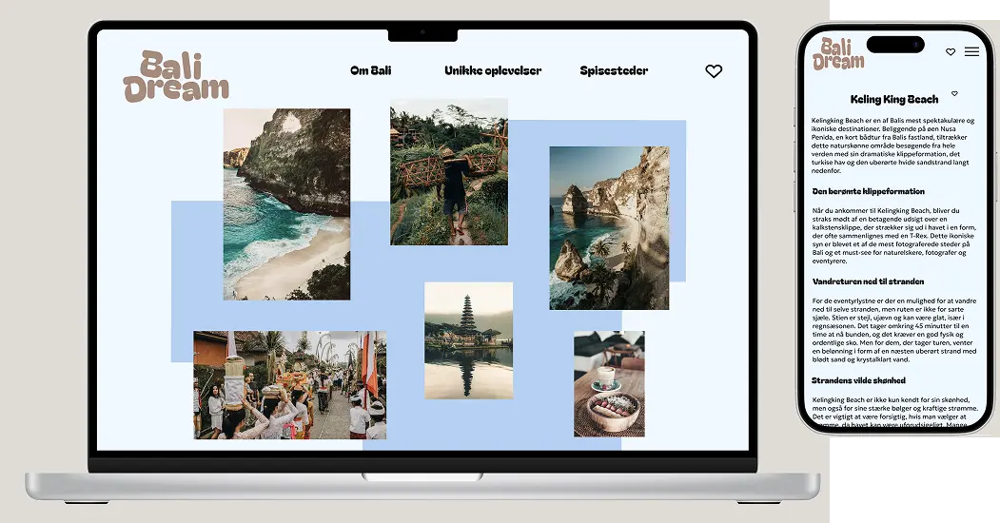

PROJEKT 2
GRUNDLÆGGENDE UX/UI
I dette tema blev vi introduceret til begreberne UX og UI. Vi har fået kendskab til forskellige teorier, værktøjer og metoder, som kan bruges inden for research, test og design i digital produktudvikling. I projektet skulle vi udvikle en hjemmeside om et selvvalgt emne, hvor vi anvendte de teorier, værktøjer og metoder, vi havde lært gennem undervisningen.
PROCESSEN
Processen startede med en brainstorm omkring emne, efterfulgt af research af eksisterende sider, som inspiration til min egen hjemmeside. Jeg valgte at udvikle en Bali-rejseguide til rejselystne personer, der enten planlægger eller drømmer om en tur til Bali. Derefter gik jeg i gang med idéudvikling, hvor jeg udarbejdede en række styletiles, wireframes og prototyper, som efterfølgende blev testet med bl.a. Likert- og 5-sekunders-test.Efter små justeringer på baggrund af testene begyndte hele kodningsprocessen i VS Code med HTML, CSS og Javascript, hvoraf jeg som det sidste foretog en Heuristik test samt en Lighthouse-test for at opnå den bedste brugeroplevelse.
LÆRING
I dette projekt har jeg lært hele processen bag digital produktudvikling – fra research over design til test – og hvilke værktøjer og metoder man kan bruge, som for eksempel wireframes, styletiles og Lighthouse-test. Undervejs erfarede jeg, hvor vigtigt det er at fokusere mere på test i fremtidige projekter, så jeg kan skabe en løsning, der ikke kun er baseret på mit eget perspektiv, men også tager brugernes behov og forventninger i betragtning. Det har givet mig en større forståelse for, hvor afgørende det er at inddrage brugerne tidligt i processen for at skabe det bedste resultat.
LØSNING
Her kan du finde den endelige løsning, hvor alle elementer er samlet og implementeret. Klik på linket nedenfor for at se den endelige site.
emilieerikson.dk